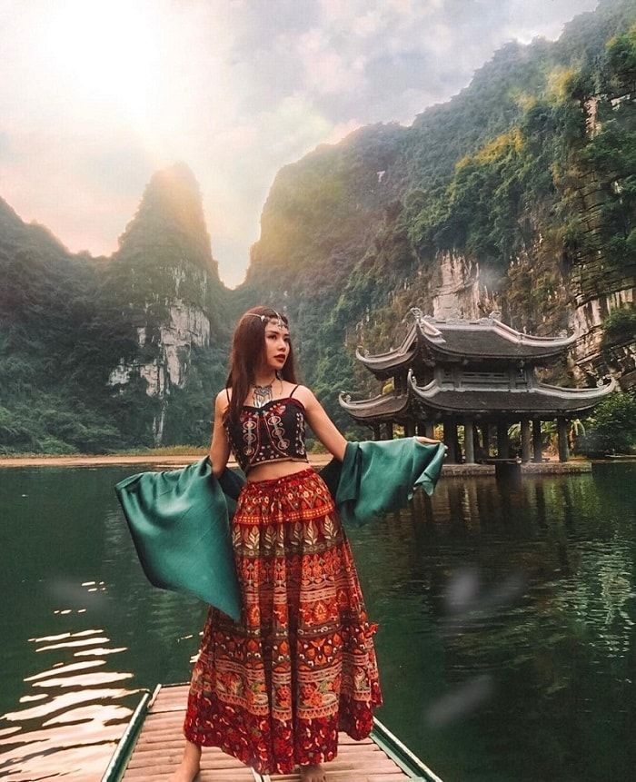
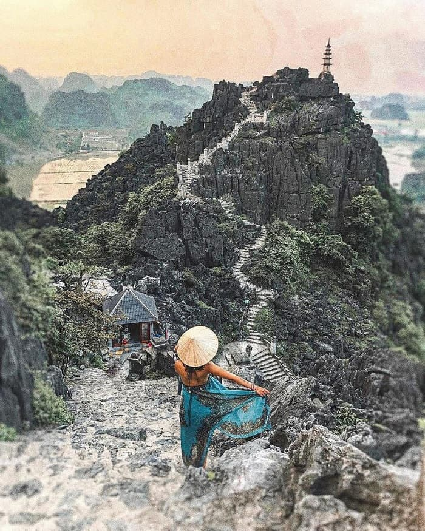
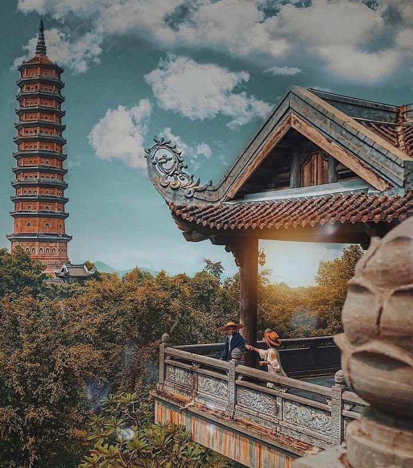
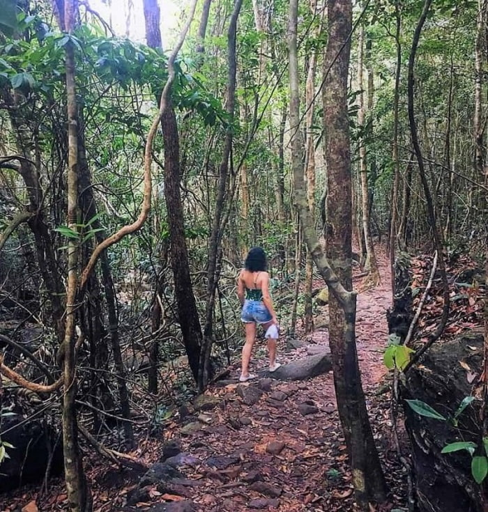
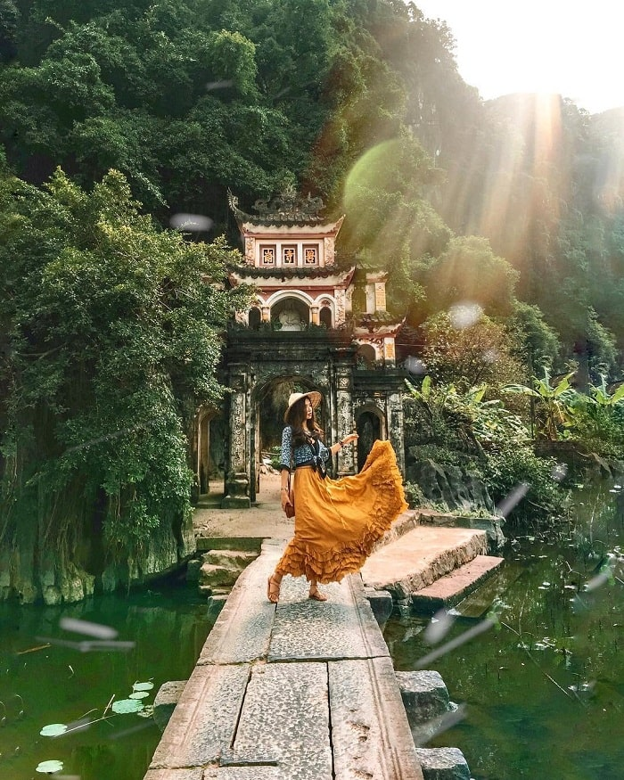
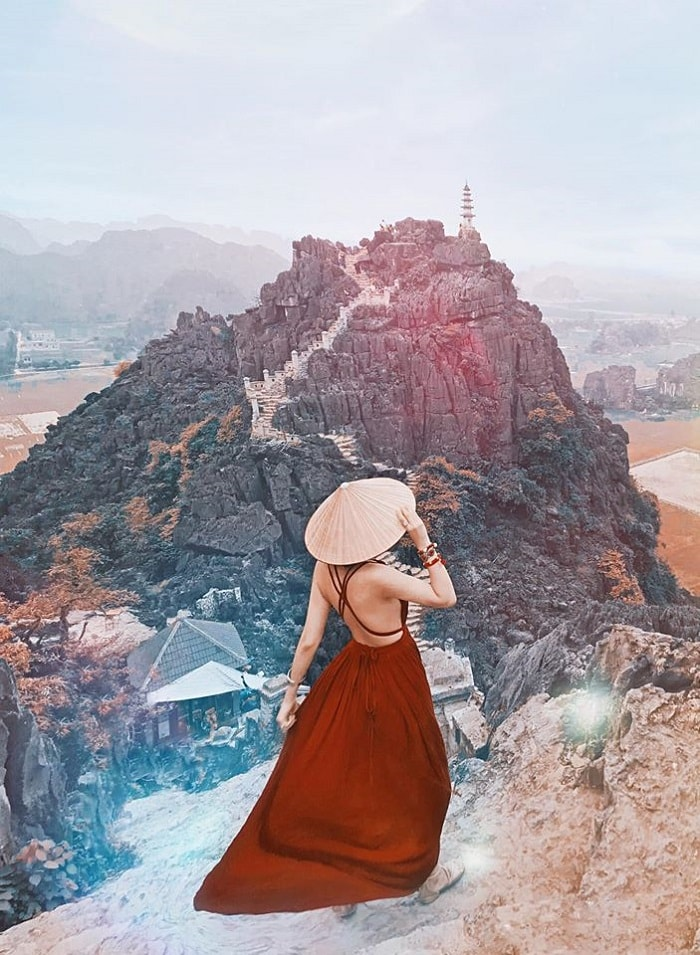
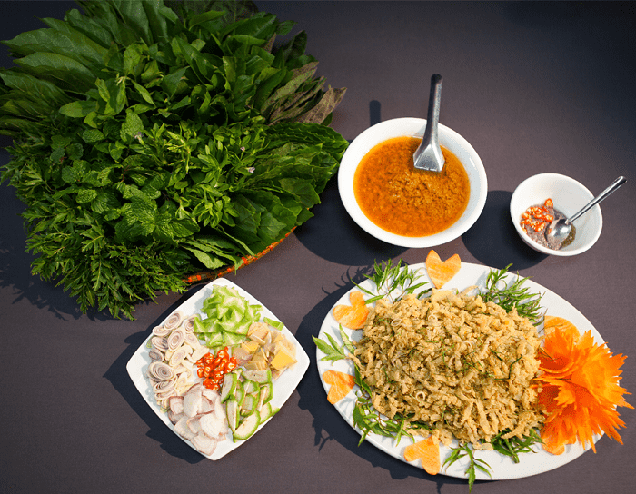

Top trải nghiệm du lịch Ninh Bình không thể bỏ lỡ
Khám phá quần thể danh thắng Tràng An
Trải nghiệm du lịch Ninh Bình đầu tiên mà bạn không thể bỏ lỡ đó chính là khám phá quần thể danh thắng Tràng An. Đây là khu du lịch có địa chất rất đặc biệt, ẩn chứa nhiều hiện tượng thiên nhiên siêu nhiên cùng cảnh quan ấn tượng như: ngấn đầm lầy, ngấn biển, các hố sụt, các trầm tích, các nón karst, tháp karst, sông ngầm, hang động, hang xuyên thủy, các bồn địa, các dạng nhũ đá. Theo nhiều chuyên gia trên thế giới thì Tràng An chính là một cái tên nổi bật về cảnh quan tháp karst đá vôi trên hành tinh.
Đến nơi này, bạn sẽ được tận mắt chiêm ngưỡng hệ thống măng đá, thạch nhũ kì diệu, lung linh được hình thành các đây hàng triệu năm, được cảm nhận, nhìn thấu được ngấn sóng biển của đất trời được hình thành dưới chân núi đá vôi, chứng kiến thảm thực vật nguyên sinh, đa dạng thay đổi theo từng biến thiên của thời tiết. Từ đó tạo nên nhiều cảm xúc chạm đến từng cung bậc của mỗi người.
Xuôi dòng trên những con thuyền nhỏ - trải nghiệm du lịch Ninh Bình đầy chất thơ
Trải nghiệm du lịch Ninh Bình tiếp theo là một hành trình đầy chất thơ. Đó chính là ngồi thuyền xuôi dòng trên dòng nước trong veo chảy uốn lượn quanh các núi đá vôi cao vời vợi. Chuyến đi đó sẽ đưa bạn hồi tưởng lại Kinh đô thịnh vượng một thời với núi là thành, sông chính là đường đi, hệ thống hang động chính là cung điện.
Leo núi ngắm vẻ đẹp kỳ vĩ của thiên nhiên - trải nghiệm du lịch Ninh Bình hấp dẫn
Leo núi ngắm cảnh được xem là một trải nghiệm du lịch Ninh Bình đắt giá. Những dãy núi dựng thành những thành lũy ở động Am Tiêm, Tràng An, hang Múa, Bích Động,... sẽ kích thích đôi chân phát cuồng của những tâm hồn thích chinh phục. Leo lên những đỉnh núi cao bạn cảm tưởng rằng mình sẽ chạm được tận trời xanh. Từ trên cao nhìn xuống bạn sẽ thấy được thảm thực vật đầy sắc màu, những ngôi đền, ngôi chùa với lối kiến trúc tinh xảo.
Khi đi qua những bậc thang bạn sẽ đến được với chùa Bái Đính - ngôi chùa lớn nhất Việt Nam để lắng nghe tiếng chuông ngân vang hòa cùng âm thanh của núi đá. Không gian thanh tịnh ở đây sẽ xoa dịu những tâm hồn âu lo.
Dã ngoại ở vườn Quốc gia Cúc Phương
Dã ngoại ở VQG Cúc Phương chính là một trong những trải nghiệm du lịch Ninh Bình lý tưởng dành cho những ai đam mê xê dịch. Đây là khu bảo tồn thiên nhiên có quy mô rộng lớn nhất cả nước, là nơi lưu trữ nhiều loài thực vật, động vật quý hiếm. Khu rừng sở hữu rất nhiều cây cổ thụ hàng trăm năm, nhiều loại chim đẹp,... cùng khí hậu mát mẻ. Vì thế rất thích hợp để trở thành địa điểm dã ngoại ngoài trời tuyệt vời.
Đến với VQG Cúc Phương vào tháng 5 bạn sẽ được chứng kiến cảnh tượng cả khu rừng ngập tràn trong sắc trắng của rất nhiều cá thể bướm. Với số lượng hàng triệu con đua nhau khoe sắc khiến cho nơi đây chẳng khác gì một vườn bươm bướm tuyệt sắc như trong thế giới cổ tích.
Check in những điểm đến đẹp nhất ở Ninh Bình

Một trải nghiệm du lịch Ninh Bình mà có lẽ sẽ không ai có thể bỏ lỡ đó là check in ở những tọa độ đẹp nhất. Ở Ninh Bình thiên nhiên đã ưu ái trao tặng rất nhiều cảnh đẹp được kiến tạo từ sông nước, núi rừng,... Ngày nay vùng đất này đã trở thành thánh địa sống ảo của du khách Việt Nam và thế giới. Tới đây bạn chỉ cần cầm máy ảnh lên ở mọi nơi thì có thể mang về cho mình nhiều bức hình đỉnh cao.
Trong số các điểm check in thì hang Múa là nổi bật nhất. Đây được xem là điểm sống ảo thần sầu nhất tại Cố đô Ninh Bình. Khung cảnh ở đây rất đẹp và được nhiều người ví là phiên bản thứ hai của Vạn Lý Trường Thành. Hành trình lên hang Múa bạn sẽ được chiêm ngưỡng cảnh sắc thiên nhiên đẹp ngẩn ngơ từ Tam Cốc và toàn cảnh thành phố. Gian nan vượt qua 500 bậc đá để lên đỉnh núi Múa nhưng thành quả sẽ thật mỹ mãn với những bức ảnh sống ảo chất lừ.
Thưởng thức thực phẩm địa phương
Trải nghiệm du lịch Ninh Bình cuối cùng chắc chắn là thưởng thức nền ẩm thực địa phương tuyệt vời. Những món ăn không thể bỏ qua như: cá rô Tổng trường, cơm cháy, thịt dê, ốc núi, nem chua Yên Mạc,... Những chú dê được nuôi trên núi, di chuyển trên địa hình hiểm trở, ăn các lá cây xanh, uống giọt sương tinh khiết nên thịt lúc nào cũng ít mỡ, săn chắc, ngọt và thơm ngậy. Từ thịt dê người dân có thể chế biến thành khoảng 20 món ăn khác nhau.
Ngoài các món ăn trên thì gỏi nhệch Kim Sơn cũng là một lựa chọn không tồi để thưởng thức. Ẩm thực ở vùng đất cố đô sẽ khiến bạn phải vương vấn, luyến lưu và nhớ mãi.
Ninh Bình có Tràng An thơ mộng, có hang động kỳ vĩ, có hang Múa đẹp ngẩn ngơ và vô vàn công trình cổ ý nghĩa. Vùng đất này cứ từ từ quyến rũ du khách phương xa bằng nhiều điều thú vị. Nếu có cơ hội đến, bạn hãy sắp xếp thời gian để có những trải nghiệm du lịch Ninh Bình thật đắt giá!
© 2021 Mollyclo. All Rights Reserved.
VỀ MOLLYCLO
- Về chúng tôi
- Mollyclo Blog
- Hợp tác cùng chúng tôi
- Cơ hội nghề nghiệp
ĐỐI TÁC
- Đối tác đăng nhập
- Đối tác liên kết
- Chương trình cho người nổi tiếng
- Chương trình cho Đại lý
ĐIỀU KHOẢN SỬ DỤNG
- Điều khoản sử dụng
- Quyền riêng tư
- Chính sách Cookie
- Thưởng phát hiện lỗi phần mềm
- Chính sách và quy định
KÊNH THANH TOÁN